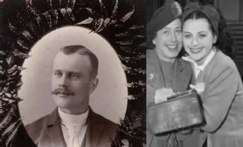
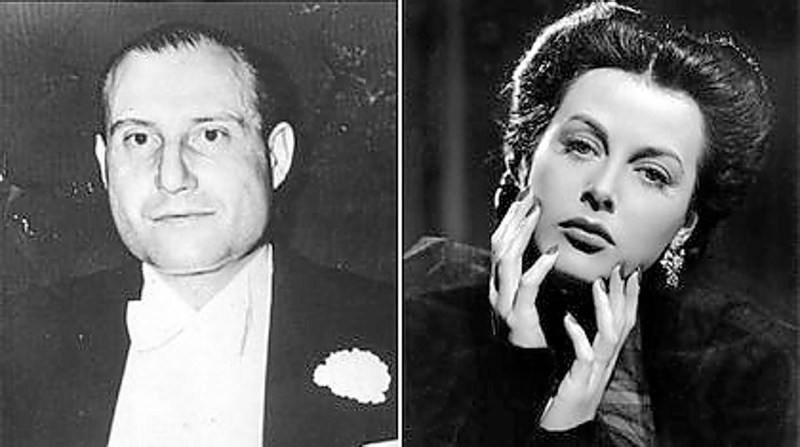
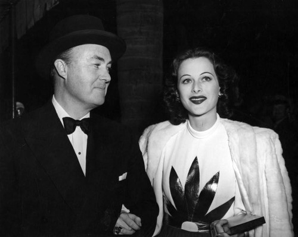
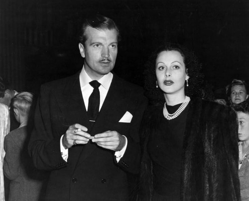
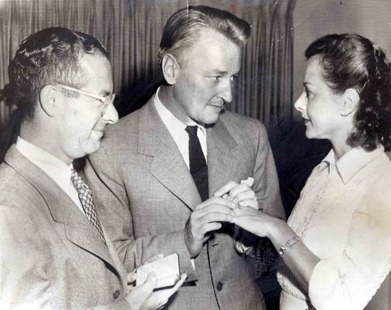
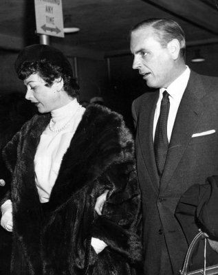
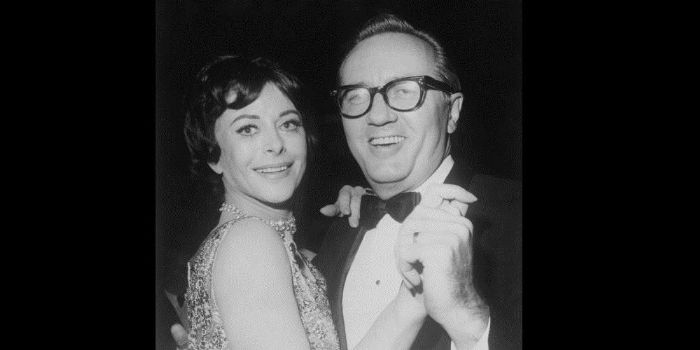
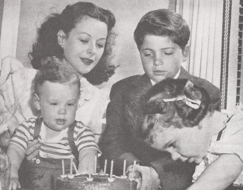

Família de Hedy Lammar
Pais
Hedy Lamarr era filha única de judeus sendo sua família parte da classe média.
Sua mãe (Gertrud LICHTWITZ, 1894-1977) era pianista e largou a carreira para criar sua filha. Foi a responsável por apresentar a Hedy o mundo das artes.
Seu pai (Emil KIESLER, 1876-1935), era gerente financeiro de um grande banco de Viena. Ele incentivava o pensamento crítico e curioso de sua filha.

Casamentos
Hedy se casou por seis vezes.
1-Friedrich Mandl - 1933–1937
2-Gene Markey - 1939–1941
3-John Loder - 1943–1947
4-Teddy Stauffer - 1951–1952
5-W. Howard Lee - 1953–1960
6-Lewis J. Boies - 1963–1965
Filhos
Hedy teve 3 filhos, James Lamarr Markey, Anthony Loder e Denise Loder.
